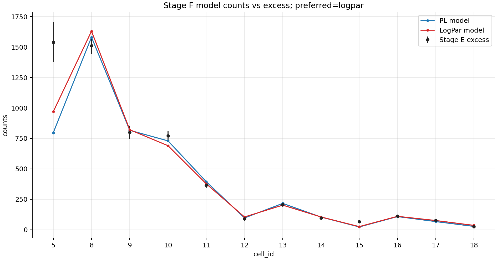
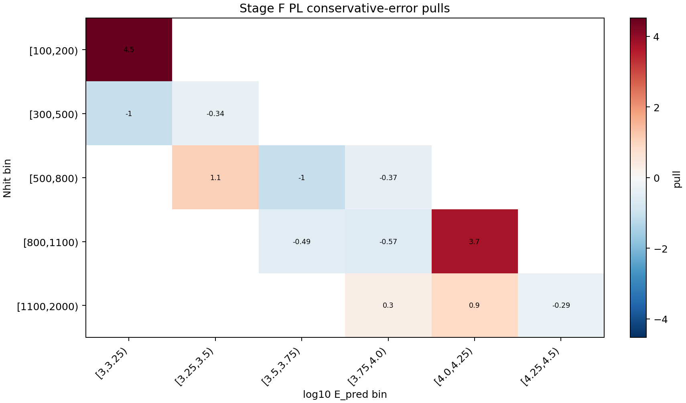
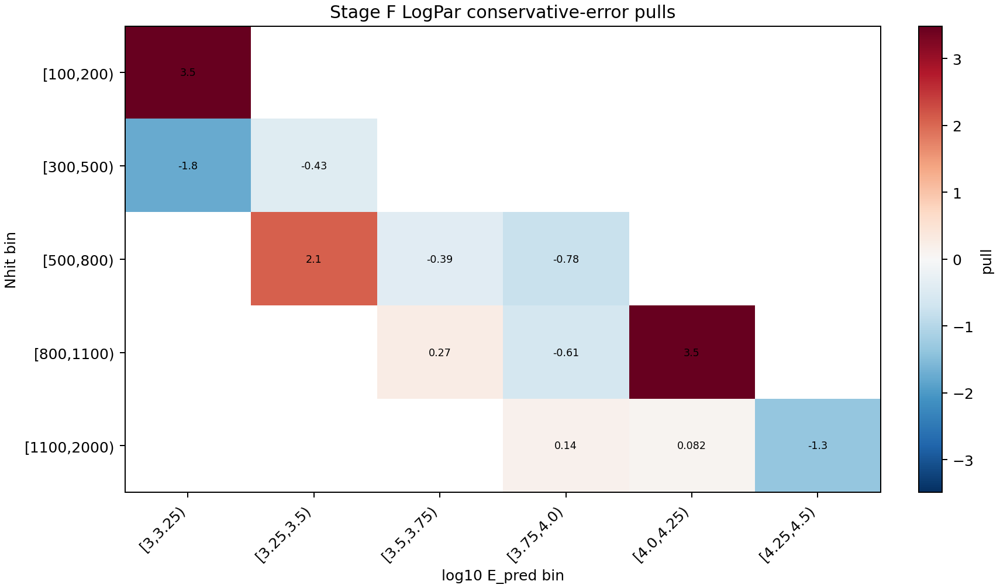

LHAASO-WCDA · Crab SED v1
Stage F Forward-Folding Fit Report
This report folds PL and LogPar Crab spectra through the Stage A response and compares expected signal counts to the Stage E per-cell excess table.
Conclusion
The preferred conservative-error fit is logpar. Physical flux promotion is True because the reference-count preflight status is passed.
Run
codex_stage_f_cell5_plus_8to18_probe
Stage F fit
Visible Exposure
15.612 d
Crab theta inside response grid
PL chi2/ndof
39.326/10
conservative error
LogPar chi2/ndof
34.846/9
natural-log beta
Reference-count preflight:
WCDA-1 Crab reference predicts
3664.6 counts, while Stage E excess is 5658.15, so observed/expected is 1.544.
Fit Parameters
- PL:
phi0=2.609100e-12,gamma=2.88247, p-value2.2259e-05. - LogPar:
phi0=2.383504e-12,alpha=2.89857,beta=-0.095633, p-value6.3437e-05.
Per-Cell Residuals
| cell | Nhit bin | log10 E_pred bin | excess | err | PL model | PL pull | LogPar model | LogPar pull |
|---|---|---|---|---|---|---|---|---|
| 5 | [100,200) | [3,3.25) | 1539.88 | 164.41 | 796.102 | 4.524 | 968.904 | 3.4729 |
| 8 | [300,500) | [3,3.25) | 1510.7 | 67.995 | 1581.51 | -1.0414 | 1630.89 | -1.7675 |
| 9 | [300,500) | [3.25,3.5) | 799.135 | 51.116 | 816.552 | -0.34073 | 820.972 | -0.4272 |
| 10 | [500,800) | [3.25,3.5) | 771.378 | 39.225 | 729.67 | 1.0633 | 690.076 | 2.0727 |
| 11 | [500,800) | [3.5,3.75) | 366.324 | 27.417 | 394.584 | -1.0308 | 376.97 | -0.38828 |
| 12 | [500,800) | [3.75,4.0) | 89.1309 | 19.669 | 96.4956 | -0.37443 | 104.485 | -0.78065 |
| 13 | [800,1100) | [3.5,3.75) | 206.784 | 18.794 | 216.024 | -0.49165 | 201.703 | 0.27033 |
| 14 | [800,1100) | [3.75,4.0) | 95.7297 | 14.432 | 103.938 | -0.56876 | 104.549 | -0.61113 |
| 15 | [800,1100) | [4.0,4.25) | 66.9559 | 11.96 | 22.5614 | 3.7119 | 25.2464 | 3.4874 |
| 16 | [1100,2000) | [3.75,4.0) | 111.432 | 12.271 | 107.758 | 0.29944 | 109.732 | 0.13857 |
| 17 | [1100,2000) | [4.0,4.25) | 76.1351 | 10.482 | 66.6927 | 0.90085 | 75.276 | 0.081965 |
| 18 | [1100,2000) | [4.25,4.5) | 24.5676 | 7.9644 | 26.8418 | -0.28554 | 35.215 | -1.3369 |
Diagnostics



